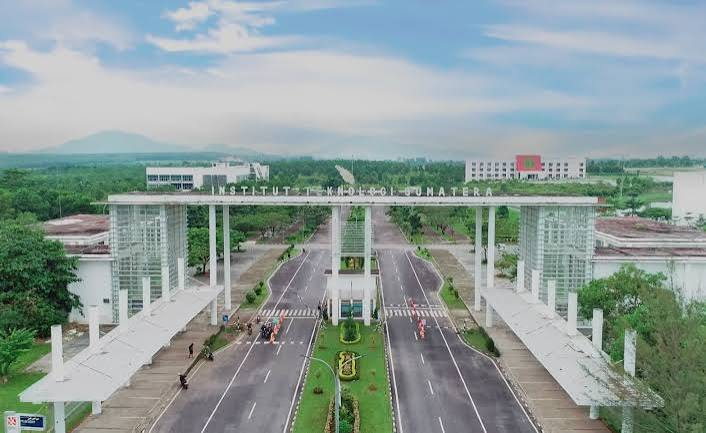

Campus Facilities
Mengenal fasilitas yang dapat menunjang kegiatan belajar dan aktivitas mahasiswa.
Explore Facilities →|
|
ITERA ExplorerExplore Your Campus |
|
Selamat datang di ITERA Explorer. Website ini dibuat untuk membantu mahasiswa mengenal lingkungan kampus Institut Teknologi Sumatera. Di sini kamu bisa melihat beberapa fasilitas yang ada di ITERA dan mengetahui rute yang bisa digunakan untuk menjelajahi area kampus. |
 |
Mengenal fasilitas yang dapat menunjang kegiatan belajar dan aktivitas mahasiswa.
Explore Facilities →Melihat beberapa rute berdasarkan tujuan, seperti rute akademik, area hijau, dan fasilitas sains.
Explore Campus Map →| Kegiatan | Fasilitas | Contoh Aktivitas |
|---|---|---|
| Belajar | Perpustakaan | Membaca dan mencari sumber belajar |
| Praktikum | Laboratorium | Kegiatan praktikum dan penelitian |
| Olahraga | Gym dan fasilitas olahraga | Aktivitas fisik |
| Rekreasi | Kebun Raya dan Embung | Menikmati lingkungan kampus |